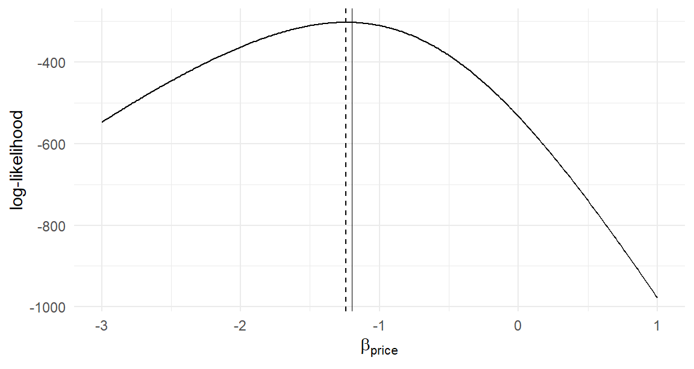
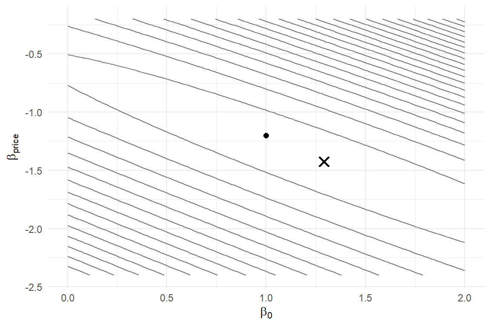

We can now specify a choice model (Chapter 1), draw from any density it involves (Chapter 2), simulate data from it (Chapter 3), and organize those data for computation (Chapter 4). This chapter builds the bridge that runs the other way — from observed data back toward the unknown parameters. The bridge is the likelihood function, and it is the single most important object in this book: Part II maximizes it, Chapter 12 approximates it, and Part III explores a posterior that is proportional to it. Every estimator we construct is some maneuver performed on the function this chapter teaches you to write.
5.1 The Likelihood Function
Start from what the model gives us. A specified choice model delivers, for any parameter value, the probability of each possible outcome in a single choice situation: \(p(y_n \,|\, \mathbf{x}_n, \boldsymbol{\beta})\). In Chapter 1 we used this object in its natural direction — parameters known, probabilities of outcomes computed. Data reverse the situation: after the study is run, the outcomes \(y_1, \ldots, y_N\) are known, and \(\boldsymbol{\beta}\) is not.
The likelihood function is the same mathematical expression read in the reverse direction:
\[
L(\boldsymbol{\beta}) = p(\mathbf{y}\,|\, \mathbf{X}, \boldsymbol{\beta}) \quad \text{viewed as a function of } \boldsymbol{\beta}\text{, with the data fixed.}
\tag{5.1}\]
Read it as: how probable were the choices we actually observed, if the true parameter vector were \(\boldsymbol{\beta}\)? Every candidate \(\boldsymbol{\beta}\) gets a score. A candidate under which the observed data would have been unremarkable scores high; a candidate under which the data would have been a miracle scores low. The principle of maximum likelihood — coming formally in a few pages — says to prefer the candidate with the highest score.
The distinction between probability and likelihood trips up everyone at first pass, so let me put it plainly. \(p(y|\mathbf{x},\boldsymbol{\beta})\) is one formula with two readings: as a function of \(y\) with \(\boldsymbol{\beta}\) fixed, it is a probability distribution (non-negative, sums to one over outcomes); as a function of \(\boldsymbol{\beta}\) with \(y\) fixed, it is a likelihood (non-negative, but sums to nothing in particular over \(\boldsymbol{\beta}\) — it is not a distribution over parameters).1 Same formula, different axis held fixed.
5.2 Independence and the Product Form
For a dataset rather than a single observation, we need the joint probability of all the observed choices. Our models make this easy by assumption: conditional on the observables and parameters, the unobservables \(\varepsilon_n\) are drawn independently across choice situations — look back at the simulator of Section 3.2, where rlogis(N) draws exactly that way. Independent unobservables make the choices conditionally independent, and the joint probability of independent events is the product of their probabilities:
For the binary logit, each factor takes a form worth writing carefully. Denote \(P_n = \Pr(y_n = 1 | \mathbf{x}_n, \boldsymbol{\beta}) = e^{\mathbf{x}_n'\boldsymbol{\beta}} / (1 + e^{\mathbf{x}_n'\boldsymbol{\beta}})\) from Equation 1.6. Shopper \(n\) contributes \(P_n\) if they bought and \(1 - P_n\) if they didn’t, which a classic piece of notation compresses into one expression:
The exponents \(y_n \in \{0,1\}\) act as switches, turning on exactly the factor that matches what shopper \(n\) actually did. This switch trick generalizes: in Chapter 8, the same device (an indicator exponent selecting the chosen alternative’s probability) builds the MNL likelihood.
A word on the independence assumption, because we will renegotiate it later. Independence across shoppers is usually innocuous. Independence across multiple choices by the same shopper is not — respondent \(n\)’s eight tasks share whatever is persistent about respondent \(n\) — and how to honor that dependence is precisely the story of the panel-data models in Chapter 11 and Chapter 13. For this chapter’s cross-sectional data (one choice per shopper), the product form is exactly right.
5.3 The Log-Likelihood
Equation 5.2 is mathematically pleasant and computationally disastrous. Each factor is a probability, typically between 0.2 and 0.8; multiply five hundred of them and the result is on the order of \(0.5^{500} \approx 10^{-151}\). Multiply a few thousand — our laptop study has 4,000 choices — and the product is smaller than the smallest positive number a computer can represent (about \(10^{-308}\) for standard doubles). The computed likelihood becomes exactly zero, for every candidate \(\boldsymbol{\beta}\), and all information is annihilated. Watch it happen:
probs <-runif(5000, 0.2, 0.8) # plausible per-choice probabilitiesprod(probs[1:100]) # fine
[1] 7.600535e-32
prod(probs[1:500]) # vanishing...
[1] 2.946295e-163
prod(probs) # gone: underflow to exactly 0
[1] 0
The remedy is to work with the logarithm of the likelihood. Logs turn products into sums, and sums of a few thousand moderate negative numbers are computationally trivial:
Nothing is lost by the transformation: the logarithm is strictly increasing, so \(L\) and \(\ell\) rank every pair of candidates identically and share exactly the same maximizer. For the binary logit, taking logs of Equation 5.3 gives the form we will implement:
From here on, “the likelihood” in conversation almost always means the log-likelihood in computation, and \(\ell(\boldsymbol{\beta})\) is the function our code evaluates. Note its sign conventions: each term is the log of a probability, hence negative, so \(\ell(\boldsymbol{\beta})\) is a negative number, and less negative is better.
5.4 Coding the Binary Logit Log-Likelihood
Let’s turn Equation 5.5 into R, in the transparent-first style we committed to. The function takes a candidate parameter vector plus the data — in the design-matrix form of Chapter 4 — and returns one number:
The loop is a line-by-line transcription of the math: representative utility, choice probability, the switch expression, accumulate. Transcription fidelity is the point — when you can see the equation in the code, you can debug the code against the equation. (The vectorized version, several hundred times faster, appears in Chapter 9; the answers are identical.)
To exercise it we need data with known truth — the simulator from Section 3.4, reproduced here so this chapter stands alone:
sim_binary_data <-function(N, beta, X =NULL,dist =c("logistic", "normal")) { dist <-match.arg(dist)if (is.null(X)) { price <-runif(N, min =0.8, max =2.4) ram16 <-rbinom(N, size =1, prob =0.5) X <-cbind(1, price, ram16) } eps <-switch(dist,logistic =rlogis(N),normal =rnorm(N)) U <-as.vector(X %*% beta) + epsdata.frame(y =as.integer(U >0), X[, -1, drop =FALSE])}set.seed(50)beta_true <-c(1.0, -1.2, 0.6)d <-sim_binary_data(N =500, beta = beta_true)y <- d$yX <-cbind(1, d$price, d$ram16)
Now the payoff. The log-likelihood scores candidates; let’s score a few, including the truth and some pretenders:
truth zero_price flipped_sign all_zero
-302.7940 -533.0668 -1077.9031 -346.5736
The ranking behaves exactly as the likelihood principle promises. The true parameters score best. Ignoring price entirely costs dozens of log-likelihood points; flipping the price coefficient’s sign — claiming shoppers prefer expensive laptops — is catastrophically implausible given these data. And the all-zero candidate, which says every shopper flips a fair coin, does poorly in a specific, interpretable way: its score is exactly \(N \log(0.5) = -346.6\), a number we will meet again as the null log-likelihood when Chapter 8 builds fit measures around it.
One more scoring note: the true \(\boldsymbol{\beta}\) is the best candidate of these four, but it will not be the exact maximizer of \(\ell\) — the maximizer adapts to this particular sample’s noise. How far the maximizer wanders from the truth, sample to sample, is the entire subject of standard errors.
5.5 Maximum Likelihood Estimation
The estimator this scoring logic suggests has a one-line definition:
The maximum likelihood estimator (MLE) is the parameter value that makes the observed data most probable. Note carefully what kind of object Equation 5.6 is, in the taxonomy from the introduction: it is an estimator — a rule mapping data to a value — not yet an estimate (that requires data) and certainly not the model (which supplied \(\ell\)’s formula). One model, many possible estimators; maximum likelihood is our first because it is general (any model with a computable likelihood), principled, and — for the well-behaved models of Part II — as statistically efficient as any estimator can be.
That efficiency claim is part of a package of classical results that I will state and use but not prove; Abramovich and Ritov (2023) and Hansen (2022) give full treatments. Under regularity conditions our models satisfy:
Consistency: as \(N \to \infty\), \(\hat{\boldsymbol{\beta}} \to \boldsymbol{\beta}^\ast\). More data concentrates the likelihood around the truth.
Asymptotic normality: \(\sqrt{N}(\hat{\boldsymbol{\beta}} - \boldsymbol{\beta}^\ast)\) converges to a normal distribution whose covariance the next section identifies. This is what licenses confidence intervals and \(z\)-statistics.
Efficiency: among (regular) consistent estimators, the MLE achieves the smallest asymptotic variance — it wrings the most out of each observation.
Invariance: the MLE of any function \(g(\boldsymbol{\beta})\) is \(g(\hat{\boldsymbol{\beta}})\). Estimate the model once, and quantities like willingness-to-pay — ratios of coefficients, as Chapter 21 develops — come free by plugging in.
These are asymptotic promises, and simulation is how we audit them at the sample sizes we actually face: the replication study in Chapter 8 will watch consistency and asymptotic normality emerge (or not) at \(N = 4{,}000\) choices.
5.6 The Score and the Hessian
Two derivative objects of \(\ell\) carry the theory and drive the computation of the next chapter. Their names are worth memorizing now.
The score is the gradient — the \(K\)-vector of first derivatives:
At an interior maximum the score is zero; that is what “maximum” means. So the MLE can be characterized as the solution to \(s(\hat{\boldsymbol{\beta}}) = \mathbf{0}\), and the numerical methods of Chapter 6 are, at heart, root-finders for the score.
For the binary logit the score has a form so clean it feels like a reward. Differentiating Equation 5.5 is worth doing once in full. Write \(v_n = \mathbf{x}_n'\boldsymbol{\beta}\), so \(P_n = e^{v_n}/(1+e^{v_n})\) and, more conveniently, \(\log P_n = v_n - \log(1+e^{v_n})\) and \(\log(1-P_n) = -\log(1+e^{v_n})\). Since \(\partial v_n/\partial \boldsymbol{\beta}= \mathbf{x}_n\), \[
\frac{\partial \log P_n}{\partial \boldsymbol{\beta}} = \mathbf{x}_n - \frac{e^{v_n}}{1+e^{v_n}}\,\mathbf{x}_n = (1-P_n)\,\mathbf{x}_n,
\qquad
\frac{\partial \log(1-P_n)}{\partial \boldsymbol{\beta}} = -P_n \mathbf{x}_n.
\] Each observation therefore contributes \(y_n(1-P_n)\mathbf{x}_n - (1-y_n)P_n\mathbf{x}_n = (y_n - P_n)\mathbf{x}_n\), and summing over observations gives the score. (The same algebra yields \(\partial P_n/\partial \boldsymbol{\beta}= P_n(1-P_n)\mathbf{x}_n\), which we will need for the Hessian in Chapter 6.)
where \(\mathbf{X}\) stacks the row vectors \(\mathbf{x}_n'\) into an \(N \times K\) matrix, and \(\mathbf{y}\) and \(\mathbf{P}\) are the \(N\)-vectors collecting the \(y_n\) and \(P_n\).
The score is the sum of prediction errors times covariates. At the maximum, errors are exactly uncorrelated with every covariate — the likelihood’s echo of least squares’ normal equations. We will verify Equation 5.8 numerically in Chapter 6 and derive its MNL sibling in Chapter 8.
The Hessian is the \(K \times K\) matrix of second derivatives:
At the maximum, \(H\) is negative definite (the surface curves down in every direction), and how sharply it curves is the information content of the data. Intuition: a knife-edge peak means tiny parameter movements make the data noticeably less probable — the data pin the parameters down; a broad mesa means many candidates explain the data near-equally — the data are less informative. The classical results make this exact: the asymptotic covariance of the MLE is the inverse of the (expected) negative Hessian, so in practice
whose diagonal, square-rooted, gives the standard errors reported next to every estimate in this book.2 If you are wondering where the \(\sqrt{N}\) of the asymptotic-normality statement went: it is hiding inside \(H\). The Hessian sums over all \(N\) observations, so it grows in proportion to \(N\), and its inverse shrinks like \(1/N\) — Equation 5.10 is the \(\sqrt{N}\) statement with the scaling already folded in. (Watch it happen empirically at the end of Chapter 6, where quadrupling \(N\) roughly halves the standard errors.) Curvature is variance, inverted. Hold onto that sentence; it is the entire connection between optimization output and statistical inference, and Chapter 6 cashes it in.
5.7 A First Estimator: Grid Search
We have the objective (Equation 5.5) and the target (Equation 5.6). The only missing ingredient is a way to find the maximizer, and the most naive method is fully within our powers: evaluate \(\ell\) on a grid of candidates and take the best. Crude, but it completes the simulate-and-recover loop for the first time in this book, and its failure mode motivates everything in Chapter 6.
Start in one dimension to build intuition: fix the intercept and memory coefficients at their true values and slice the log-likelihood along the price coefficient alone (a slice, not the “profile likelihood” of the testing literature, which re-maximizes over the other parameters at each point):
b_price <-seq(-3, 1, by =0.01)ll <-sapply(b_price, function(b)loglik_binary(c(1.0, b, 0.6), y, X))ggplot(data.frame(b_price, ll), aes(b_price, ll)) +geom_line() +geom_vline(xintercept =-1.2, linewidth =0.3) +geom_vline(xintercept = b_price[which.max(ll)], linetype ="dashed") +labs(x =expression(beta[price]), y ="log-likelihood")

Figure 5.1: A slice of the log-likelihood along the price coefficient (intercept and memory coefficients held at truth). The maximizer (dashed) sits near, but not exactly at, the true value of -1.2 (solid): the difference is sampling noise, the raw material of standard errors.
The curve is smooth, single-peaked, and — look closely at the dashed line — peaks at -1.24, close to but not exactly \(-1.2\). That gap is sampling variation; rerun the simulation with a different seed and the peak lands somewhere else nearby. The curvature at the peak is what Equation 5.10 converts into a standard error — a sharper peak would mean the data confine \(\beta_{\text{price}}\) more tightly.
Now search over two parameters jointly (intercept and price, memory held at truth), which also lets us see a log-likelihood surface — worth a long look, because the algorithms of Chapter 6 live on surfaces like this one:
grid <-expand.grid(b0 =seq(0, 2, length.out =80),bp =seq(-2.4, -0.2, length.out =80))grid$ll <-mapply(function(b0, bp)loglik_binary(c(b0, bp, 0.6), y, X), grid$b0, grid$bp)best <- grid[which.max(grid$ll), ]ggplot(grid, aes(b0, bp, z = ll)) +geom_contour(bins =25, color ="grey50") +annotate("point", x =1.0, y =-1.2, size =2) +annotate("point", x = best$b0, y = best$bp, shape =4, size =3, stroke =1.2) +labs(x =expression(beta[0]), y =expression(beta[price]))

Figure 5.2: Log-likelihood contours over the intercept and price coefficient. The X marks the grid maximizer; the dot marks the truth. The elongated, tilted contours mean the two parameters are partially confounded in these data: raising the intercept while steepening price sensitivity leaves the data almost as probable.
best
b0 bp ll
2852 1.291139 -1.425316 -302.2199
Recovery, again: the grid maximizer lands near \((1.0, -1.2)\). Notice the shape of the contours — elongated and tilted, not circular. The tilt says the data partially confound the two parameters (a higher baseline buying propensity plus stronger price aversion mimics the original pair), and its algebraic signature is a large off-diagonal element in \(H^{-1}\): correlated estimation errors. Surfaces like this are easy terrain; Chapter 13 will show you surfaces with ridges and plateaus where the confounding is severe, and reading contour geometry will pay off.
5.8 Why Grid Search Fails at Scale
So why isn’t this book twenty pages long? Count evaluations. A grid with 100 points per axis costs \(100^K\) evaluations for \(K\) parameters:
Table 5.1: The curse of dimensionality for grid search.
At a million evaluations per second, the six-parameter MNL takes eleven days; the mixed MNL needs \(10^{48}\) seconds — about thirty orders of magnitude longer than the age of the universe. And a 100-point grid is coarse — refining it multiplies the cost further. Exhaustive search dies exponentially in \(K\).
But our two figures whisper the escape route. These surfaces are smooth and hill-shaped, so the local slope — the score, Equation 5.8, which we can compute — always points uphill. A climber who consults the gradient needs no grid: from any starting point, walk uphill until the slope vanishes. Making that idea precise, fast, and robust is the business of numerical optimization, and it is where we turn next.
5.9 Key Learnings
The likelihood is the model’s probability formula read in reverse: data fixed, parameters free (Equation 5.1). It scores every candidate \(\boldsymbol{\beta}\) by how probable it renders the observed choices.
Independence of the unobservables across choice situations — visible as one line in our simulator — makes the likelihood a product (Equation 5.2); the 0/1 exponent trick (Equation 5.3) selects each observation’s realized outcome.
Products of thousands of probabilities underflow to zero; the log-likelihood (Equation 5.4) converts them to benign sums with the same maximizer. Code computes \(\ell\), always.
loglik_binary() is Equation 5.5 transcribed line by line: utility, probability, switch, accumulate — and it ranked truth above pretenders on simulated data, with the all-zero candidate scoring the null value \(N\log(0.5)\).
The MLE (Equation 5.6) is consistent, asymptotically normal, efficient, and invariant. The score (Equation 5.7) vanishes at the maximum — for the binary logit it is the elegant \(\mathbf{X}'(\mathbf{y}- \mathbf{P})\) — and the inverse negative Hessian (Equation 5.10) converts peak curvature into standard errors.
Grid search completed our first simulate-and-recover loop and drew us two instructive pictures — but it costs \(100^K\) evaluations and dies exponentially in dimension (Table 5.1). Smooth, gradient-bearing surfaces invite hill-climbing instead: Chapter 6.
Abramovich, Felix, and Ya’acov Ritov. 2023. Bayesian Statistics. CRC press.
Greene, William H. 2008. “Discrete Choice Modeling.” In Palgrave Handbook of Econometrics, Volume 2: Applied Econometrics, edited by Terence C. Mills and Kerry Patterson. Palgrave Macmillan.
Hansen, Bruce. 2022. Econometrics. Princeton University Press.
Wanting a distribution over parameters is a legitimate desire — it is the Bayesian desire, and Chapter 15 shows what must be added to the likelihood to get one (a prior). Until then, the likelihood is a scoring function, not a belief.↩︎
The negative expected Hessian is the Fisher information matrix; evaluating the actual Hessian at \(\hat{\boldsymbol{\beta}}\) estimates it. Alternative covariance estimators (outer-product-of-scores, sandwich) matter when models are misspecified; Greene (2008) catalogs them. For our simulate-and-recover work, where the model is true by construction, Equation 5.10 is the natural choice.↩︎